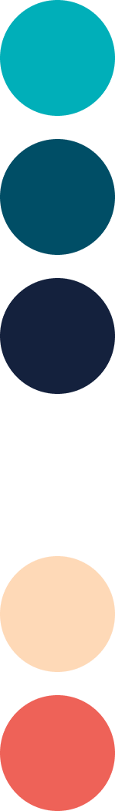
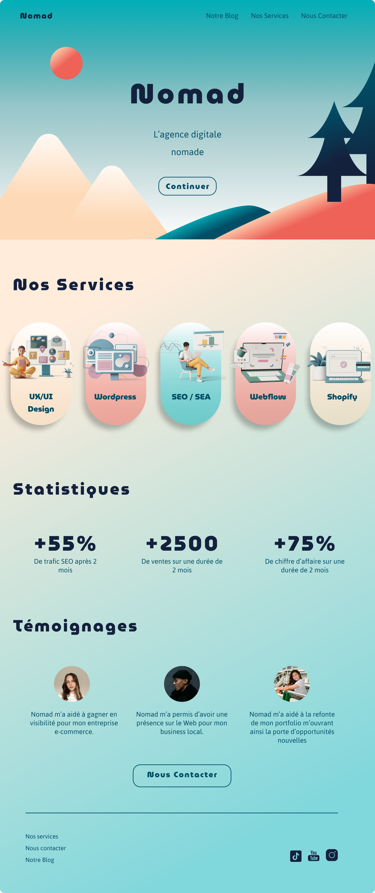
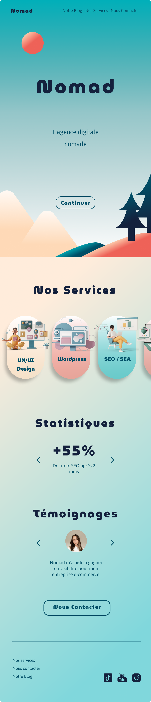

07 || Landing page de l'agence digitale Nomad




Ce projet est une landing page pour une agence digitale nomade appelée Nomad. Cette agence aide les professionnels à développer leurs présence sur le web.
Cible: les entrepreuneurs et gérants de petites et moyennes entreprises.
L'interface originale montre la créativité et la personnalités des créateurs de cette agence. La palette de couleurs est complexe avec des dégradés pour amener de la profondeur et un effet de 3D. Malgré beaucoup de couleurs, celles-ci ont un côté appaisantes et qui inspirent confiance aux potentiels clients.